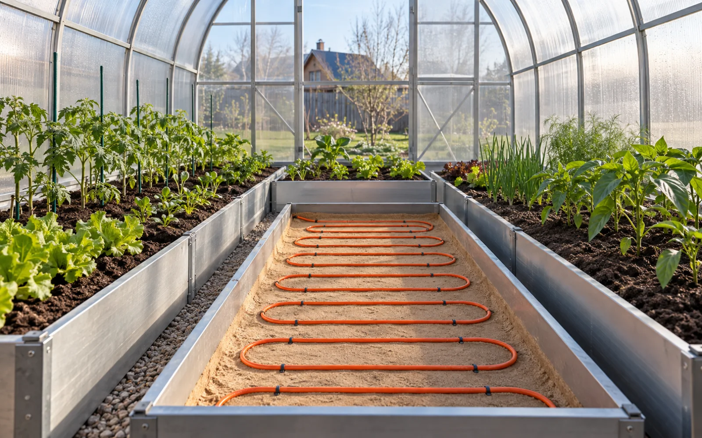
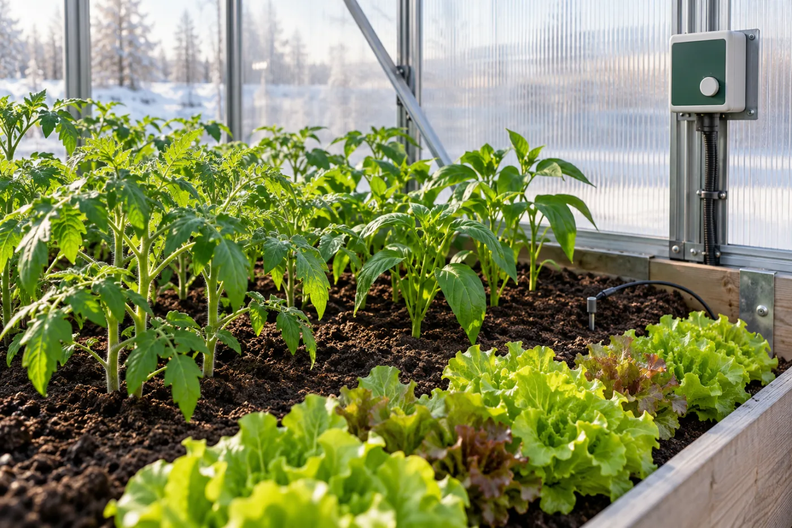
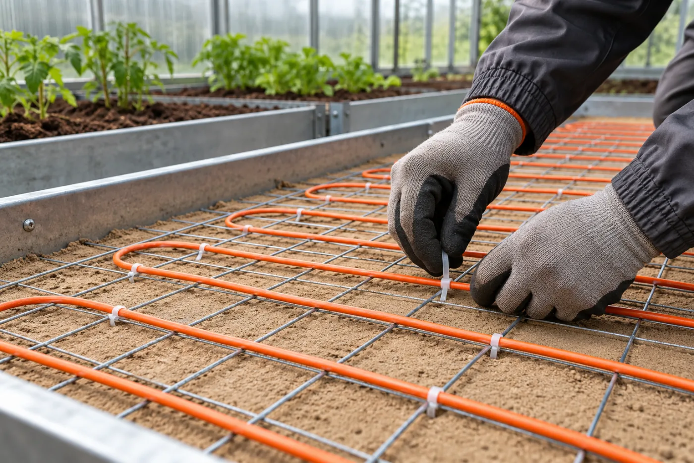

Теплицы и парники
Грядки с томатами, перцами, огурцами и другой рассадой. Почва теплее ранней весной и поздней осенью.
Греющий кабель помогает сохранить нужную температуру у корней, начать сезон раньше и защитить растения от холодной почвы. Мы подберем кабель Lavita, термостат и датчик под вашу теплицу.

Пример обогрева грунта в теплице: кабель укладывают до засыпки плодородной почвой.
Кабель греет нужные участки почвы — от небольшой грядки до большой рассадной площадки.
Грядки с томатами, перцами, огурцами и другой рассадой. Почва теплее ранней весной и поздней осенью.
Грунтовые посадки, черенки и теплолюбивые растения, которым нужна стабильная температура у корней.
Многолетники и ранние луковичные. Кабель можно разместить лишь в зоне цветов, без дорожек.
Кассеты, гряды и участки, где укореняются черенки и растут молодые саженцы.
Дернина на площадках, где важны здоровые корни и более длинный сезон. Здесь нужен отдельный инженерный проект.
Участки у стен, дверей и других холодных зон. Кабель и шаг между витками подбираем индивидуально.
Когда корням хватает тепла, растения легче переживают холодные ночи и активнее растут.

Можно начать работу с рассадой и грядками раньше, чем в холодной теплице без кабеля.
Термостат следит за почвой и включает кабель, когда температура опускается ниже заданной.
В комфортной почве корни активнее получают воду и питательные вещества. Это важно для роста и урожая.
Кабель отдаёт тепло грунту, датчик измеряет температуру у корней, а термостат включает и отключает питание.
Лежит «змейкой» в песчаном слое под плодородной почвой. Длина и шаг зависят от площади и мощности.
Следит за температурой в выбранной зоне. Гофротрубка помогает защитить датчик и заменить его при необходимости.
Поддерживает заданный диапазон без постоянного контроля со стороны владельца.
Сетка держит кабель на месте, песок защищает его оболочку, утеплитель сокращает потери тепла вниз.
Ниже — варианты для разных грядок. Точную модель и длину определяем по условиям вашего объекта.
Для грядок правильной формы, где кабель можно разложить с точным шагом без пересечений. Секция фиксированной длины.
Для грядок сложной формы и участков, где рядом с холодной стеной и в центре теплицы разные условия.
Вариант для зон с более высокими теплопотерями, если его мощность и температурный режим подходят для грунта.
Контролирует температуру почвы по выносному датчику. Подходит для простых теплиц с одним температурным режимом.
Для теплиц, где важно учитывать температуру почвы и воздуха. Удобен при сильных дневных и ночных перепадах.
Помогают закрепить кабель, защитить датчик и сохранить тепло в зоне корней.
Учитываем именно площадь посадок, а не всю теплицу. Для каждого объекта нужна своя схема.
Уточняем полезную площадь, форму и места, где кабель не нужен: дорожки, опоры и фундамент.
Смотрим на морозы, покрытие теплицы, утеплитель под грядкой и нужную температуру для растений.
Выбираем кабель, его длину и шаг между витками. Проверяем нагрузку на электросеть.
Подбираем термостат, датчик почвы, УЗО и схему электрических цепей.
Кабель размещают в подготовленных слоях. Точная глубина зависит от корней, толщины плодородной почвы и конструкции грядки.

Схема условная: состав и толщина слоёв не универсальны. Датчик почвы размещают отдельно от витков кабеля в зоне, где нужна точная температура.
Убираем камни и острые предметы, выравниваем основание.
Укладываем подходящий утеплитель и песчаный слой по схеме.
Раскладываем «змейкой» с нужным шагом, фиксируем на сетке.
Добавляем песок и защитный слой без острых включений.
Возвращаем плодородный грунт, не повреждая кабель.
Ставим датчик и термостат, проверяем цепи и пробный пуск.
Важны не только метры кабеля, но и температура грунта, схема грядок и подходящие компоненты.
Считаем мощность для площади посадок с учётом климата, покрытия теплицы и утеплителя.
Подбираем кабель Lavita, термостат, датчик, крепёж и другие нужные элементы.
Помогаем определить шаг и слои грунта, чтобы кабель работал там, где это нужно растениям.
Да. Кабель обычно кладут лишь в зоне посадок. Дорожки, опоры и фундамент в полезную площадь не входят.
Это зависит от культуры и стадии роста. Для многих теплолюбивых растений ориентир лежит в диапазоне +15…+25 °C. Термостат должен измерять температуру именно грунта.
Резистивная секция отдаёт постоянную мощность и имеет фиксированную длину. Саморегулирующийся кабель меняет мощность на разных участках. Оба типа требуют правильной схемы и электрозащиты.
Для схем из этого раздела предусмотрен защитный песчаный слой и подходящий крепёж. Острые камни и щебень рядом с оболочкой кабеля недопустимы. Точный состав слоёв определяют по проекту и паспорту кабеля.
Кабель в грунте прежде всего греет корневую зону. Если нужна ещё и заданная температура воздуха, это отдельная задача, которую следует учесть при расчёте.
Размеры грядок, материал и толщину покрытия теплицы, регион, нужную температуру почвы, данные об утеплителе и фотографии или план грядок.
Расскажите о грядках, растениях и условиях на участке. Мы сможем точнее определить мощность и состав системы.